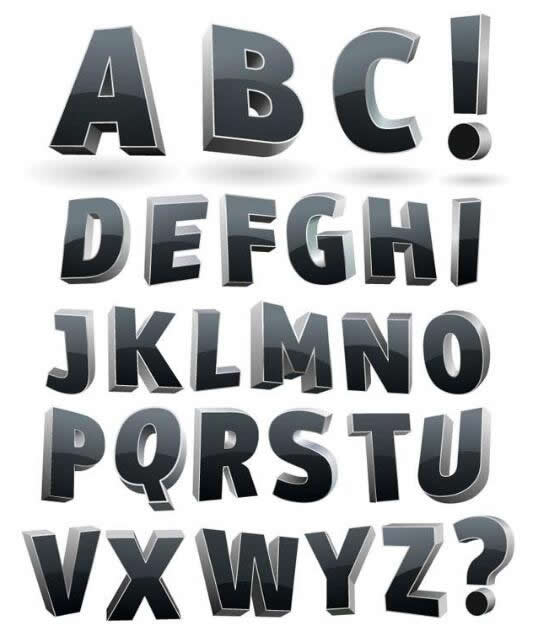
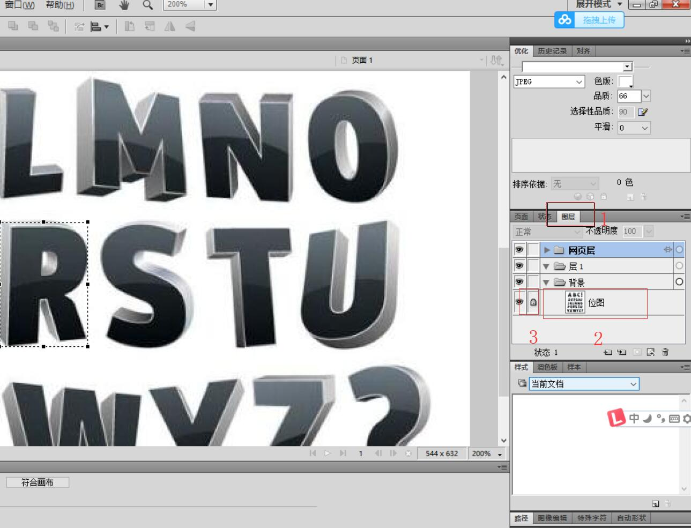
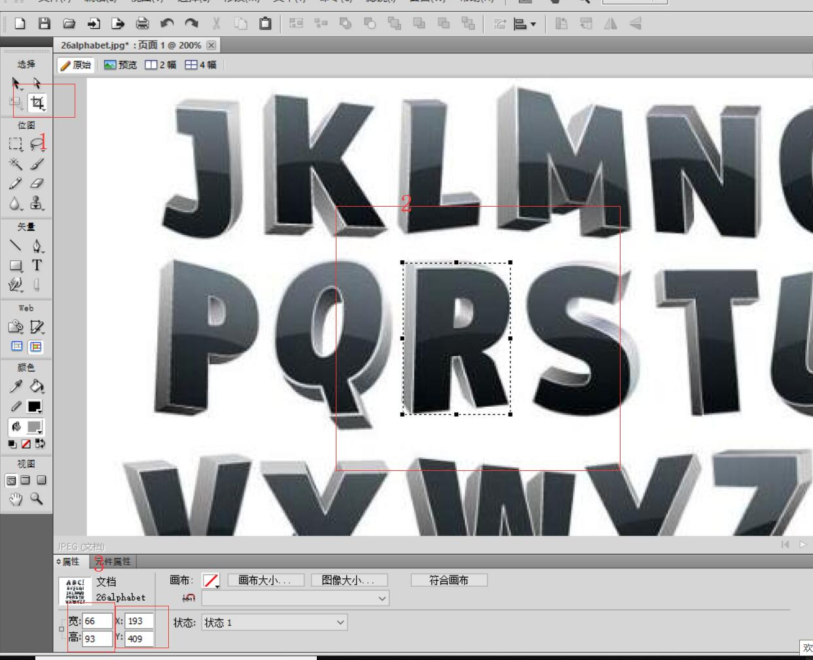
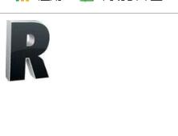
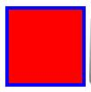

原文连接:https://www.cnblogs.com/ruigege0000/p/11504071.html
一、精灵图练习
练习：用精灵图表示出“RUI”
工具：Adobe Fireworks
方法：（1）打开Adobe Fireworks（2）选取一张26个英文字母图片

（3）先把我们这张图片的图层锁定，原因：防止图片被修改，不可恢复
按图片中的顺序进行操作。

（4）按顺序进行选取，选择裁剪工具（我们的目的并非真正裁剪，之所以用Adobe的这个工具，是因为如3可以显示这个裁剪区域的实际大小，以及左上角的坐标）

（5）找好坐标以及大小之后，我们开始写代码
如下图，我们就把这个字母给单独显示出来了，通过设置背景图片的属性
.box1{
width: 66px;
height: 93px;
background: url("image/26alphabet.jpg") no-repeat -193px -409px;
}
..........省略代码........
<div class="box1"></div>
（6）依次类推，我们的最后代码和结果为
div{
display: inline-block;
}
.box1{
width: 66px;
height: 93px;
background: url("image/26alphabet.jpg") no-repeat -193px -409px;
}
.box2{
width: 74px;
height: 97px;
background: url("image/26alphabet.jpg") no-repeat -417px -408px;
}
.box3 {
width: 31px;
height: 90px;
background: url("image/26alphabet.jpg") no-repeat -451px -197px;
}
..........省略代码..........
<div class="box1"></div>
<div class="box2"></div>
<div class="box3"></div>
二、什么是边框
1.边框就是环绕在标签宽度和高度周围的线条
2.边框的属性格式
2.1连写（同时设置四条边的边框）
border:边框的宽度 边框的样式 边框的颜色；
2.2连写（分别设置四条边的边框）
border-top:边框的宽度 边框的样式 边框的颜色；
border-left:边框的宽度 边框的样式 边框的颜色；
border-right:边框的宽度 边框的样式 边框的颜色；
border-bottom:边框的宽度 边框的样式 边框的颜色；
注意点：
（1）边框的宽度可以省略，但是显示非常细
（2）边框的样式我们记住两个就够了
dashed虚线，solid实线，样式是不能省略的！！！
其他的就去w3cshool就可以了
（3）边框的颜色省略不写默认黑色
举例：
.aaa{
background-color: red;
width: 100px;
height: 100px;
border: 5px solid blue;/*中间样式记住两个就够了，dashed虚线，solid实线
}
........省略代码.......
<div class="aaa">
</div>
三、源码：
d103_elf_image_exercise.html
地址:
https://github.com/ruigege66/HTML_learning/blob/master/d103_elf_image_exercise.html
2.CSDN：https://blog.csdn.net/weixin_44630050（心悦君兮君不知-睿）
3.博客园：https://www.cnblogs.com/ruigege0000/
4.欢迎关注微信公众号：傅里叶变换，个人账号，仅用于技术交流，后台回复“礼包”获取Java大数据学习视频礼包